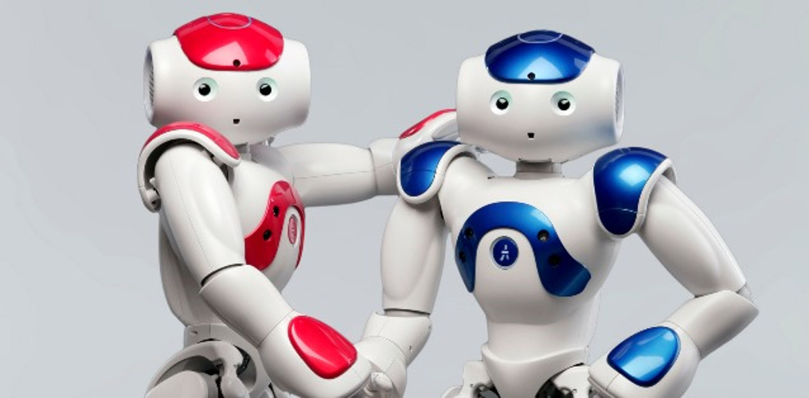

Project One

“Freescale Cup: Intelligent Car Racing (electromagnetism group)” for North China competition area
May 2014 to May 2015
Read More
Project Two

Emotional classification of online Chinese micro-blog
article‟ in Tsinghua National Laboratory for Information Science and Technology
October 2015 to Jun 2016
Read More
Project Three

NAO Control Method
January 2016 to June 2016
Control NAO Robot to dance, sing and communicate with people by using Choregraphe.
Here are some videos about NAO robot.
Other Projects
"Indoor Orientation and Navigation System based on FIRD technology” of Beijing Innovation Program
“Music Information Retrieval: the emotion classification of Erhu performers” in Renming University of China